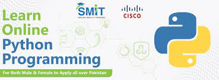

Python:
I assume you meant "Python" rather than "paython." Python is a high-level, versatile, and interpreted programming language known for its simplicity, readability, and ease of use. Created by Guido van Rossum and first released in 1991, Python has since gained tremendous popularity among developers for a wide range of applications, from web development to data science and machine learning.
Here are some key features and details about Python:
1. **Easy to Learn and Read**:
Python's syntax is designed to be straightforward and easy to understand, making it an excellent language for beginners and experienced developers alike. Its readability reduces the time needed to write, debug, and maintain code.
2. **Interpreted Language**:
Python is an interpreted language, meaning it does not require compilation before execution. The Python interpreter reads the code line by line and executes it, allowing for rapid development and prototyping.
3. **Versatility**:
Python is a general-purpose programming language, which means it can be used for a wide range of applications. It is used in web development, data analysis, artificial intelligence, scientific computing, automation, scripting, game development, and much more.
4. **Large Standard Library**:
Python comes with a comprehensive standard library that provides numerous modules and packages for various tasks. This "batteries-included" approach saves developers from reinventing the wheel and allows them to perform complex operations with minimal effort.
5. **Open Source**:
Python is an open-source language, which means the community actively contributes to its development and improvement. This has led to a vibrant ecosystem of third-party libraries and frameworks that extend Python's capabilities.
6. **Highly Extensible**:
Python can be easily extended with C or C++ code, enabling developers to use existing libraries written in these languages. This feature allows Python to integrate well with other languages and systems.
7. **Dynamic Typing**:
Python is dynamically typed, meaning variable types are determined at runtime. This gives developers flexibility but requires vigilance to avoid type-related issues during development.
8. **Indentation-Based Syntax**:
Python uses whitespace indentation to indicate code blocks, which enhances code readability and enforces a consistent coding style across projects.
9. **Active Community**:
Python has a large and active community of developers who contribute to forums, Q&A sites, and open-source projects. This community support makes learning and problem-solving easier for developers.
10. **Frameworks and Libraries**:
Python has a wide range of popular frameworks and libraries that simplify and expedite development for specific purposes. Some notable ones include Django (for web development), NumPy and Pandas (for data analysis), TensorFlow and PyTorch (for machine learning), and Flask (for building web APIs).
Python's simplicity, combined with its versatility and strong community support, has made it a top choice for developers across different domains. Its extensive applications and continued growth ensure that Python remains a prominent language in the world of programming.